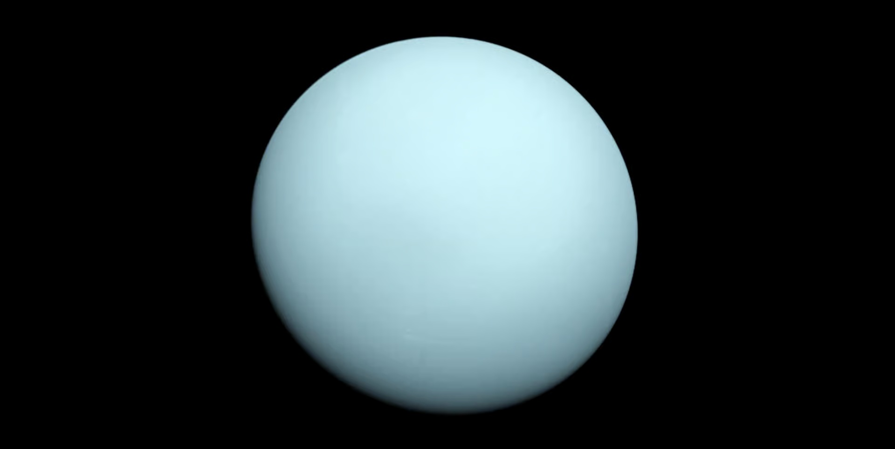
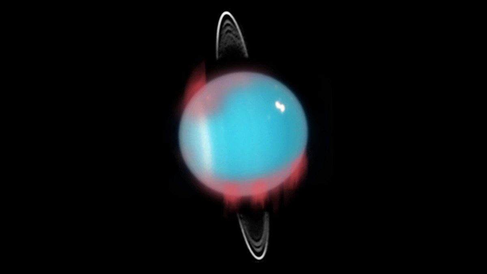
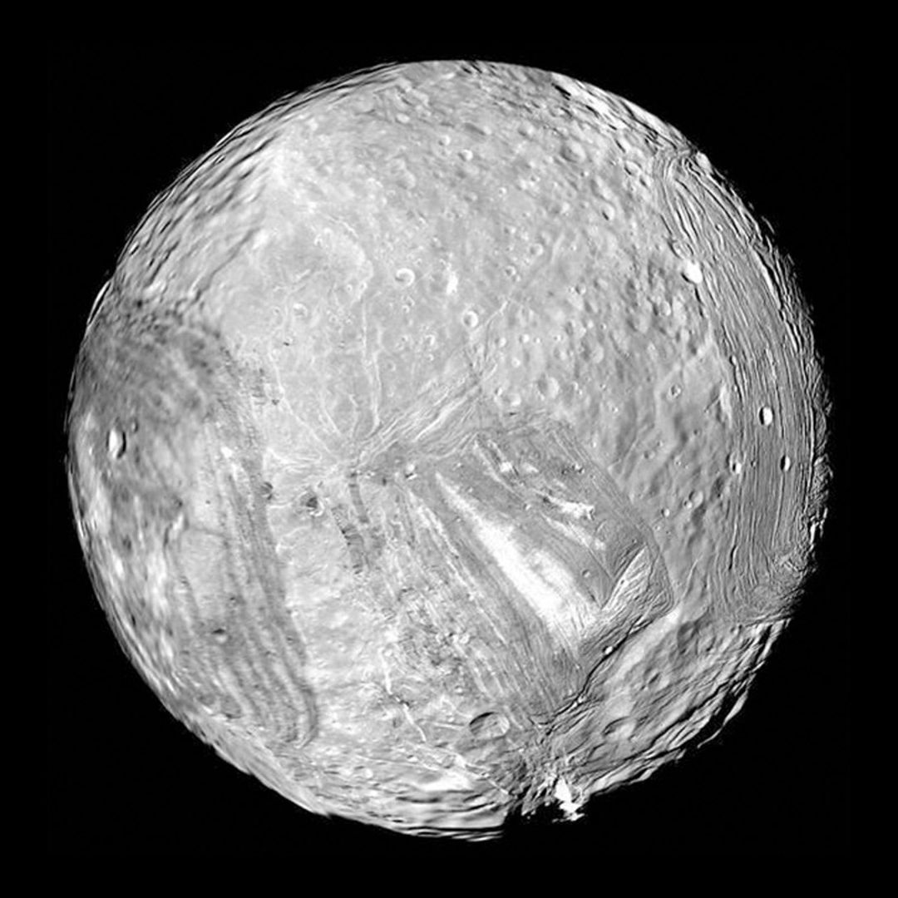

• Type : Planète de glace (géante)
• Diamètre : 50 724 km (environ 4 fois celui de la Terre)
• Distance du Soleil : 2,9 milliards de km (19,2 unités astronomiques)
• Durée d'un jour : 17 heures et 14 minutes
• Durée d'une année : 84 années terrestres
• Nombre de satellites : 27 lunes confirmées
• Température : -224°C (au sommet des nuages)
• Atmosphère : Principalement hydrogène (83%), hélium (15%) et méthane (2%)
Uranus est la septième planète du système solaire et la première à avoir été découverte à l'aide d'un télescope. Elle fut repérée par William Herschel en 1781, bien qu'il l'ait d'abord confondue avec une comète. Son nom vient du dieu grec du ciel, père de Cronos (Saturne) dans la mythologie.
Uranus est classée comme une "géante de glace", distincte des géantes gazeuses comme Jupiter et Saturne. Bien qu'elle soit composée principalement d'hydrogène et d'hélium comme ces dernières, elle contient également une proportion plus importante d'éléments plus lourds, notamment de l'eau, de l'ammoniac et du méthane sous forme de glace.
La caractéristique la plus remarquable d'Uranus est son axe de rotation extrêmement incliné - environ 98 degrés par rapport à son plan orbital. Cela signifie qu'Uranus tourne pratiquement "sur le côté", comme si elle était couchée sur son orbite. Cette orientation unique crée des saisons extrêmes : pendant un quart de l'année uranienne (environ 21 ans terrestres), chaque pôle est soit constamment exposé au Soleil, soit plongé dans l'obscurité totale.
L'origine de cette inclinaison inhabituelle reste mystérieuse. L'hypothèse la plus courante suggère qu'Uranus a subi une ou plusieurs collisions massives avec des objets de la taille de la Terre au début de l'histoire du système solaire.
Uranus apparaît comme un disque bleu-vert uniforme dans les télescopes, une couleur due à la présence de méthane dans son atmosphère qui absorbe la lumière rouge. Contrairement à Jupiter et Saturne avec leurs bandes nuageuses colorées, Uranus semble relativement calme et sans caractéristiques distinctes à première vue.
Cependant, des observations plus détaillées, notamment par le télescope spatial Hubble et les grands observatoires terrestres, ont révélé des structures nuageuses et des tempêtes occasionnelles. L'atmosphère d'Uranus est dynamique, avec des vents pouvant atteindre 900 km/h, mais ses caractéristiques sont moins visibles en raison d'une couche de brume qui masque les couches inférieures.
Uranus possède un système d'anneaux, découvert en 1977 lorsque la planète est passée devant une étoile, provoquant des occultations inattendues avant et après l'occultation principale. Ces anneaux sont très sombres, composés de particules relativement grandes et probablement jeunes à l'échelle géologique.
La planète compte 27 lunes connues, toutes nommées d'après des personnages des œuvres de William Shakespeare et Alexander Pope. Les cinq principales sont Miranda, Ariel, Umbriel, Titania et Obéron. Miranda, en particulier, présente une surface étonnamment variée avec des falaises, des canyons et des terrains qui semblent avoir été assemblés comme un patchwork, suggérant une histoire géologique complexe.
Uranus n'a été visitée qu'une seule fois par une sonde spatiale : Voyager 2, qui a survolé la planète en 1986. Cette brève rencontre a fourni la plupart de nos connaissances détaillées sur la planète, ses anneaux et ses lunes. Voyager 2 a découvert 10 nouvelles lunes et deux nouveaux anneaux, et a mesuré la température d'Uranus à -224°C, faisant d'elle l'une des planètes les plus froides du système solaire malgré sa distance au Soleil inférieure à celle de Neptune.
Depuis ce survol, l'observation d'Uranus se fait principalement par des télescopes terrestres et spatiaux. Aucune autre mission dédiée n'a été envoyée vers cette planète lointaine, bien que plusieurs concepts de missions aient été proposés pour l'avenir.
Uranus reste l'une des planètes les moins étudiées de notre système solaire, gardant encore de nombreux mystères à résoudre concernant sa structure interne, son champ magnétique inhabituellement incliné, et les processus dynamiques qui se déroulent sous son apparence calme.

Image d'Uranus prise par la sonde Voyager 2 lors de son survol en 1986

Uranus et ses anneaux photographiés par le télescope spatial Hubble

Miranda, la lune la plus intrigante d'Uranus, avec sa surface chaotique photographiée par Voyager 2
Chez Cosmos Explorer, nous proposons plusieurs façons de découvrir et d'explorer la mystérieuse planète Uranus :
• Observation astronomique : Lors de nos soirées d'observation, nous utilisons nos télescopes avancés pour vous montrer Uranus, qui apparaît comme un petit disque bleu-vert.
• Exploration virtuelle : Notre simulateur de réalité virtuelle vous permet de "voyager" vers Uranus, d'explorer ses anneaux et de visiter ses lunes fascinantes.
• Exposition "Mystères d'Uranus" : Découvrez notre exposition dédiée à cette planète énigmatique, avec des modèles interactifs illustrant son inclinaison unique et son système d'anneaux.
• Conférences spécialisées : Assistez à nos présentations sur les particularités d'Uranus et les défis que pose son exploration future.
Pour plus d'informations sur nos programmes d'exploration d'Uranus, consultez notre page d'exploration ou contactez-nous.